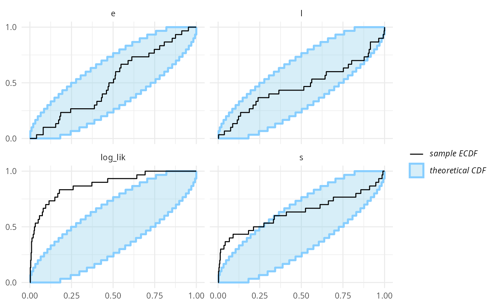
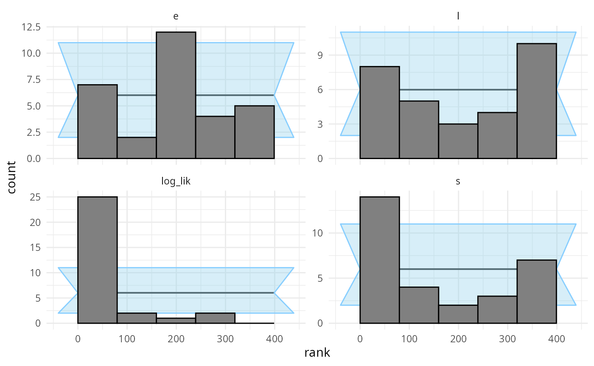
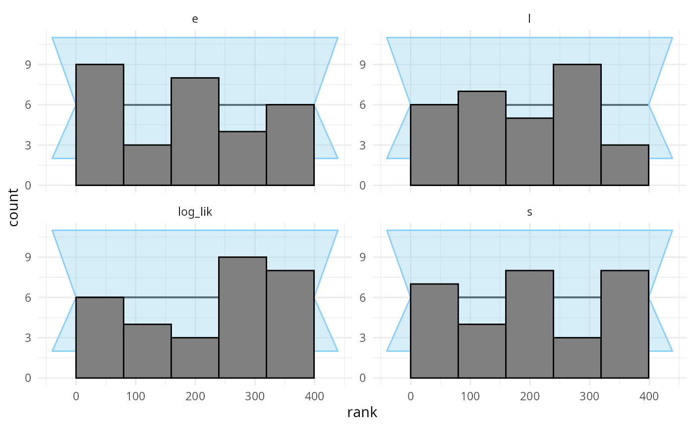
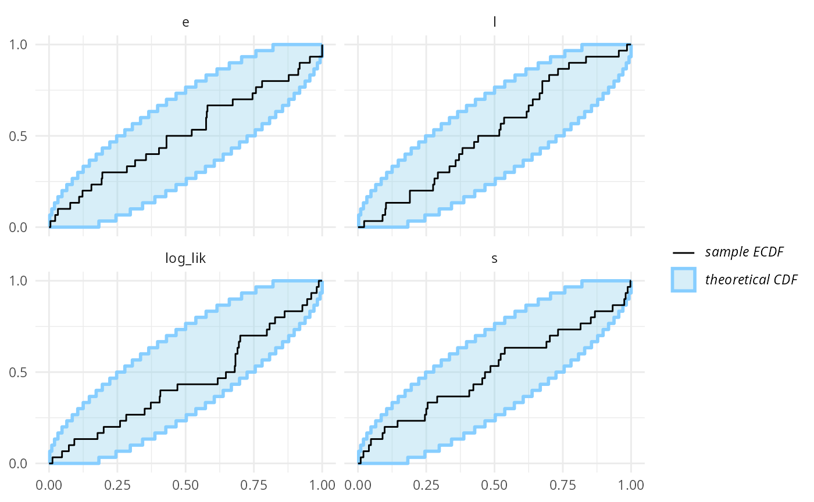
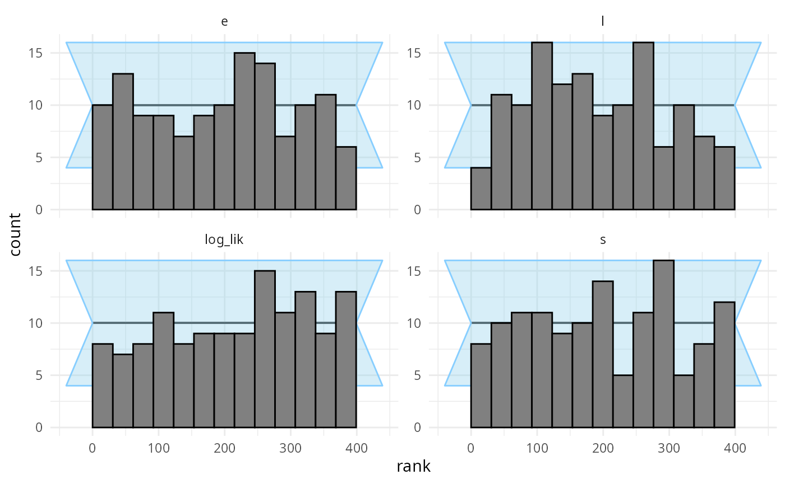
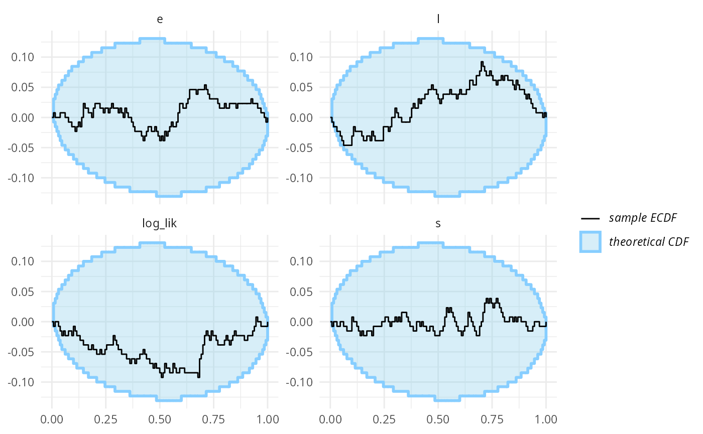
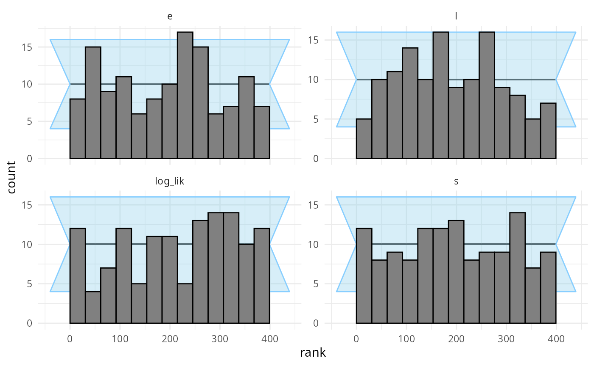
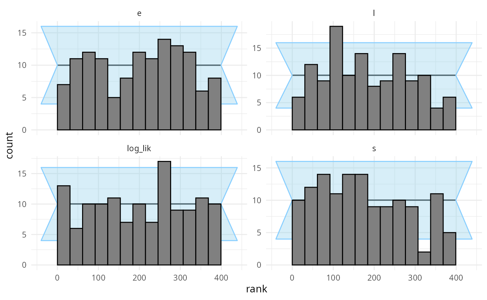
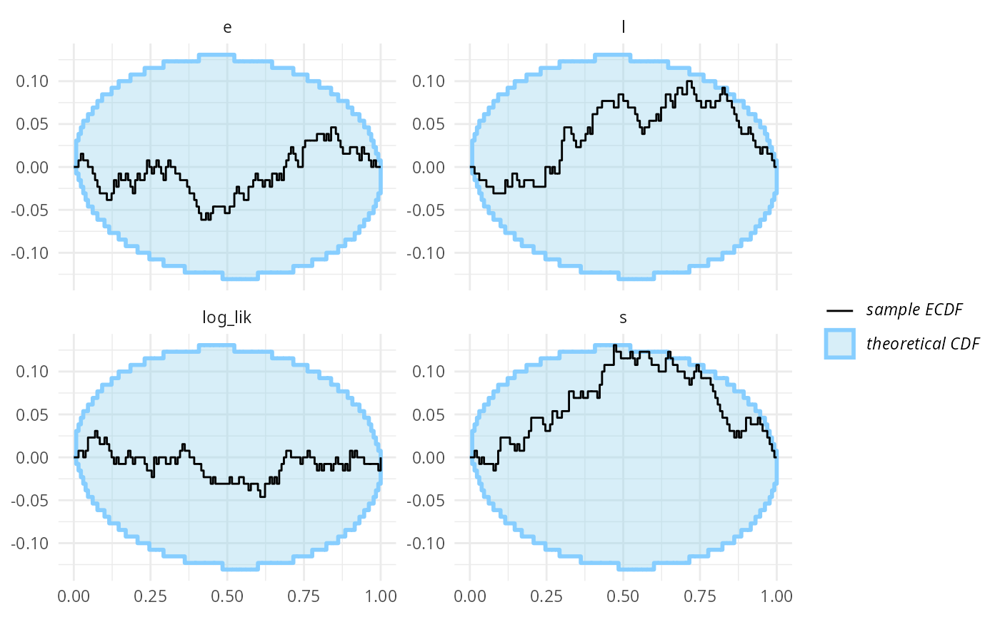

vignettes/discrete_vars.Rmd
discrete_vars.RmdSBC was primarily designed for continuous parameters, but can be used with models that have discrete parameters - whether the parameters are directly represented (e.g. in BUGS/JAGS) or marginalized out (as is usual in Stan).
library(SBC);
library(ggplot2)
use_cmdstanr <- getOption("SBC.vignettes_cmdstanr", TRUE) # Set to false to use rstan instead
if(use_cmdstanr) {
library(cmdstanr)
} else {
library(rstan)
rstan_options(auto_write = TRUE)
}
# Multiprocessing support
library(future)
plan(multisession)
# The fits are very fast and we fit just a few,
# so we force a minimum chunk size to reduce overhead of
# paralellization and decrease computation time.
options(SBC.min_chunk_size = 5)
# Setup caching of results
if(use_cmdstanr) {
cache_dir <- "./_discrete_vars_SBC_cache"
} else {
cache_dir <- "./_discrete_vars_rstan_SBC_cache"
}
cache_dir_jags <- "./_discrete_vars_SBC_cache"
if(!dir.exists(cache_dir)) {
dir.create(cache_dir)
}
if(!dir.exists(cache_dir_jags)) {
dir.create(cache_dir_jags)
}
theme_set(theme_minimal())
# Run this _in the console_ to report progress for all computations to report progress for all computations
# see https://progressr.futureverse.org/ for more options
progressr::handlers(global = TRUE)We take the changepoint model from: https://mc-stan.org/docs/2_26/stan-users-guide/change-point-section.html
data {
real<lower=0> r_e;
real<lower=0> r_l;
int<lower=1> T;
array[T] int<lower=0> y;
}
transformed data {
real log_unif;
log_unif = -log(T);
}
parameters {
real<lower=0> e;
real<lower=0> l;
}
transformed parameters {
vector[T] lp;
lp = rep_vector(log_unif, T);
for (s in 1:T)
for (t in 1:T)
lp[s] = lp[s] + poisson_lpmf(y[t] | t < s ? e : l);
}
model {
e ~ exponential(r_e);
l ~ exponential(r_l);
target += log_sum_exp(lp);
}
generated quantities {
int<lower=1,upper=T> s;
s = categorical_logit_rng(lp);
}
if(use_cmdstanr) {
model_1 <- cmdstan_model("stan/discrete_vars1.stan")
backend_1 <- SBC_backend_cmdstan_sample(model_1)
} else {
model_1 <- stan_model("stan/discrete_vars1.stan")
backend_1 <- SBC_backend_rstan_sample(model_1)
}Now, let’s generate data from the model.
generate_single_sim_1 <- function(T, r_e, r_l) {
e <- rexp(1, r_e)
l <- rexp(1, r_l)
s <- sample.int(T, size = 1)
y <- array(NA_real_, T)
for(t in 1:T) {
if(t <= s) {
rate <- e
} else {
rate <- l
}
y[t] <- rpois(1, rate)
}
list(
variables = list(
e = e, l = l, s = s
), generated = list(
T = T,
r_e = r_e,
r_l = r_l,
y = y
),
# Letting SBC know that the s parameter can potentially
# be drawn as all constants
var_attributes = var_attributes(
s = possibly_constant_var_attribute()
)
)
}
generator_1 <- SBC_generator_function(generate_single_sim_1, T = 5, r_e = 0.5, r_l = 0.1)
set.seed(85394672)
datasets_1 <- generate_datasets(generator_1, 30)Additionally, we’ll add a derived quantity expressing the total
log-likelihood of data given the fitted parameters. The expression
within the derived_quantities() call is evaluated for both
prior and posterior draws and included as another variable in SBC
checks. It turns out this type of derived quantities can increase the
sensitivity of the SBC against some issues in the model. See
vignette("limits_of_SBC") for a more detailed discussion of
this.
log_lik_dq <- derived_quantities(log_lik = sum(dpois(y, ifelse(1:T < s, e, l), log = TRUE)))So finally, lets actually compute SBC:
results_1 <- compute_SBC(datasets_1, backend_1,
cache_mode = "results",
cache_location = file.path(cache_dir, "model1"),
dquants = log_lik_dq)## Results loaded from cache file 'model1'## - 1 (3%) fits had tail ESS undefined or less than half of the maximum rank, potentially skewing
## the rank statistics. The lowest tail ESS was 156.
## If the fits look good otherwise, increasing `thin_ranks` (via recompute_SBC_statistics)
## or number of posterior draws (by refitting) might help.## - 2 (7%) fits had divergent transitions. Maximum number of divergences was 2.## Not all diagnostics are OK.
## You can learn more by inspecting $default_diagnostics, $backend_diagnostics
## and/or investigating $outputs/$messages/$warnings for detailed output from the backend.Here we also use the caching feature to avoid recomputing the fits when recompiling this vignette. In practice, caching is not necessary but is often useful.
We can quickly note that the statistics for the s
parameter are extreme - many ranks of 0 and extreme z-scores,
including -Infinity. Seing just one or two such fits should be enough to
convince us that there is something fundamentally wrong.
dplyr::filter(results_1$stats, variable == "s") ## sim_id variable simulated_value rank z_score mean sd q5
## 1 1 s 3 198 -0.02513039 3.04025 1.60164642 1
## 2 2 s 1 25 -1.87063891 2.03000 0.55061402 1
## 3 3 s 4 24 -1.32749875 4.65650 0.49453907 4
## 4 4 s 1 2 -3.20883875 2.88875 0.58860857 2
## 5 5 s 5 396 2.75372657 2.83800 0.78511789 1
## 6 6 s 2 287 0.12197276 1.83450 1.35686035 1
## 7 7 s 3 0 -Inf 4.00000 0.00000000 4
## 8 8 s 2 165 -0.59094575 2.86750 1.46798586 1
## 9 9 s 2 4 -7.66167464 2.98525 0.12859460 3
## 10 10 s 2 3 -6.78495998 3.00075 0.14749534 3
## 11 11 s 4 3 -12.36179157 4.99400 0.08040906 5
## 12 12 s 1 84 -1.14496381 2.03475 0.90374035 1
## 13 13 s 2 272 -0.04186579 2.06175 1.47495112 1
## 14 14 s 1 10 -2.09090787 2.06525 0.50946769 2
## 15 15 s 5 348 1.59294620 2.85175 1.34860173 1
## 16 16 s 4 102 -0.32224374 4.37650 1.16837024 1
## 17 17 s 4 289 0.52869578 3.20350 1.50653748 1
## 18 18 s 4 369 0.58443980 3.41275 1.00480836 1
## 19 19 s 5 362 1.22600251 3.03400 1.60358563 1
## 20 20 s 5 392 2.86690181 3.07225 0.67241577 2
## 21 21 s 3 175 -0.19248783 3.33675 1.74946123 1
## 22 22 s 4 66 -0.59856041 4.54200 0.90550593 3
## 23 23 s 5 312 1.44332013 2.83550 1.49966730 1
## 24 24 s 1 2 -2.85291892 2.16225 0.40738978 2
## 25 25 s 3 0 -9.57756957 4.01075 0.10553304 4
## 26 26 s 1 7 -1.13356041 2.32525 1.16910399 1
## 27 27 s 4 329 1.34803837 2.08000 1.42429181 1
## 28 28 s 3 0 -Inf 4.00000 0.00000000 4
## 29 29 s 4 4 -3.56749357 4.97200 0.27246020 5
## 30 30 s 1 4 -1.39051691 2.25450 0.90218248 1
## median q95 rhat ess_bulk ess_tail attributes max_rank has_na
## 1 3 5 1.0001472 960.1297 NA possibly_constant 399 FALSE
## 2 2 3 0.9998128 1400.4890 887.7721 possibly_constant 399 FALSE
## 3 5 5 0.9997579 2376.7389 NA possibly_constant 399 FALSE
## 4 3 4 1.0000908 1090.4292 1117.9399 possibly_constant 399 FALSE
## 5 3 4 0.9998188 2981.9423 2683.8788 possibly_constant 399 FALSE
## 6 1 5 1.0036613 1166.8487 NA possibly_constant 399 FALSE
## 7 4 4 NA NA NA possibly_constant 399 FALSE
## 8 3 5 0.9999413 2969.6936 NA possibly_constant 399 FALSE
## 9 3 3 0.9997509 3870.2781 4008.0221 possibly_constant 399 FALSE
## 10 3 3 1.0001209 4123.9995 4073.9620 possibly_constant 399 FALSE
## 11 5 5 0.9998265 3068.1264 NA possibly_constant 399 FALSE
## 12 2 4 1.0001338 1839.3131 1208.6369 possibly_constant 399 FALSE
## 13 1 5 1.0015456 372.2029 NA possibly_constant 399 FALSE
## 14 2 2 1.0002332 3469.7957 3094.8514 possibly_constant 399 FALSE
## 15 3 5 0.9998561 2411.3315 NA possibly_constant 399 FALSE
## 16 5 5 0.9998223 1767.4101 NA possibly_constant 399 FALSE
## 17 4 5 1.0004377 1165.0950 NA possibly_constant 399 FALSE
## 18 4 5 0.9999092 2587.4329 NA possibly_constant 399 FALSE
## 19 3 5 1.0013922 1480.6382 NA possibly_constant 399 FALSE
## 20 3 4 0.9997843 3031.8315 1861.1172 possibly_constant 399 FALSE
## 21 4 5 1.0021130 426.1324 NA possibly_constant 399 FALSE
## 22 5 5 1.0028079 2498.9440 NA possibly_constant 399 FALSE
## 23 3 5 1.0009141 2999.7228 NA possibly_constant 399 FALSE
## 24 2 3 0.9997871 2815.0432 2413.4425 possibly_constant 399 FALSE
## 25 4 4 1.0018197 3183.2795 3168.0850 possibly_constant 399 FALSE
## 26 2 5 1.0008354 2386.0106 NA possibly_constant 399 FALSE
## 27 1 5 0.9997617 1161.8534 NA possibly_constant 399 FALSE
## 28 4 4 NA NA NA possibly_constant 399 FALSE
## 29 5 5 0.9997645 1020.1639 NA possibly_constant 399 FALSE
## 30 2 5 1.0018580 827.6593 NA possibly_constant 399 FALSEInspecting the statistics shows that quite often, the model is quite
sure of the value of s while the simulated value is just
one less.
Looking at the ecdf plot we see that this seems to
compromise heavily the inference for s, but the other
parameters do not show such bad behaviour. Note that the
log_lik derived quantity shows even starker failure than
s, so it indeed poses a stricter check in this
scenario.
plot_ecdf(results_1)
plot_rank_hist(results_1)
An important note: you may wonder, how we got such a wiggly line for
the s parameter - doesn’t it have just 5 possible values?
Shouldn’t therefore the ECDF be one big staircase? In fact the package
does a little trick to make discrete parameters comparable to continuous
- the rank of a discrete parameter is chosen uniformly randomly across
all possible ranks (i.e. posterior draws that have exactly equal value).
This means that if the model is well behaved, ranks for the discrete
parameter will be uniformly distributed across the whole range of
possible ranks and we can use exactly the same diagnostics for a
discrete parameter as we do for the continuous ones.
But back to the model - what happened? What is wrong with it? After
some inspection, you may notice that the simulator does not match the
model - the model takes the early rate (e) for points
t < s while the simulator takes e for
points t <= s, so there is effectively a shift by one
time point between the simulator and the model. So let’s assume that we
beleive that the Stan model is in fact right. We therefore updated the
simulator to match the model:
generate_single_sim_2 <- function(T, r_e, r_l) {
e <- rexp(1, r_e)
l <- rexp(1, r_l)
s <- sample.int(T, size = 1)
y <- array(NA_real_, T)
for(t in 1:T) {
if(t < s) { ### <--- Only change here
rate <- e
} else {
rate <- l
}
y[t] <- rpois(1, rate)
}
list(
variables = list(
e = e, l = l, s = s
), generated = list(
T = T,
r_e = r_e,
r_l = r_l,
y = y
),
# Letting SBC know that the s parameter can potentially
# be drawn as all constants
var_attributes = var_attributes(
s = possibly_constant_var_attribute()
)
)
}
generator_2 <- SBC_generator_function(generate_single_sim_2, T = 5, r_e = 0.5, r_l = 0.1)And we can recompute:
set.seed(5846502)
datasets_2 <- generate_datasets(generator_2, 30)
results_2 <- compute_SBC(datasets_2, backend_1,
dquants = log_lik_dq,
cache_mode = "results",
cache_location = file.path(cache_dir, "model2"))## Results loaded from cache file 'model2'## - 3 (10%) fits had divergent transitions. Maximum number of divergences was 7.## Not all diagnostics are OK.
## You can learn more by inspecting $default_diagnostics, $backend_diagnostics
## and/or investigating $outputs/$messages/$warnings for detailed output from the backend.
plot_rank_hist(results_2)
plot_ecdf(results_2)
Looks good, so let us add some more simulations to make sure the model behaves well.
set.seed(54321488)
datasets_2_more <- generate_datasets(generator_2, 100)
results_2_more <- compute_SBC(datasets_2_more, backend_1,
dquants = log_lik_dq,
cache_mode = "results",
cache_location = file.path(cache_dir, "model3"))## Results loaded from cache file 'model3'## - 3 (3%) fits had at least one Rhat > 1.01. Largest Rhat was 1.035.## - 5 (5%) fits had tail ESS undefined or less than half of the maximum rank, potentially skewing
## the rank statistics. The lowest tail ESS was 21.
## If the fits look good otherwise, increasing `thin_ranks` (via recompute_SBC_statistics)
## or number of posterior draws (by refitting) might help.## - 7 (7%) fits had divergent transitions. Maximum number of divergences was 103.## Not all diagnostics are OK.
## You can learn more by inspecting $default_diagnostics, $backend_diagnostics
## and/or investigating $outputs/$messages/$warnings for detailed output from the backend.
results_2_all <- bind_results(results_2, results_2_more)We switch from the ecdf plot to ecdf_diff
as it is more legible with large number of simulations.
plot_rank_hist(results_2_all)
plot_ecdf_diff(results_2_all)
Now - as far as this amount of SBC steps can see, the model is good
and we get good behaviour for both the continuous and the discrete
parameters and the log_lik derived quantity. Hooray!
We can now write the same model in JAGS. This becomes a bit easier as JAGS lets us represent discrete parameters directly:
data {
for(i in 1:T) {
prior_s[i] = 1.0/T
}
}
model {
e ~ dexp(r_e);
l ~ dexp(r_l);
s ~ dcat(prior_s)
for(i in 1:T) {
y[i] ~ dpois(ifelse(i < s, e, l))
}
}We will use the rjags package, let us verify it is
installed correctly.
## Loading required package: coda## Linked to JAGS 4.3.2## Loaded modules: basemod,bugsWe will also default to relatively large number of samples as we can expect some autocorrelation in the Gibbs sampler.
backend_jags <- SBC_backend_rjags("other_models/changepoint.jags",
variable.names = c("e","l","s"),
n.iter = 10000,
n.burnin = 1000,
n.chains = 4,
thin = 10)Running SBC with all the corrected datasets from before (rJAGS accepts input data in exactly the same format as Stan, so we can reuse the datasets without any change):
datasets_2_all <- bind_datasets(datasets_2, datasets_2_more)
results_jags <- compute_SBC(datasets_2_all, backend_jags,
dquants = log_lik_dq,
cache_mode = "results",
cache_location = file.path(cache_dir_jags, "rjags"))## Results loaded from cache file 'rjags'The rank plots show no problems.
plot_rank_hist(results_jags)
plot_ecdf_diff(results_jags)As an exercise, we can also write the marginalized version of the model in JAGS. In some cases, marginalization improves performance even for JAGS models, however, for this model it is actually not an improvement, presumably because the model is very simple.
data {
for(i in 1:T) {
prior_unif[i] = -log(T)
}
# Using the zeroes crossing trick to compute the likelihood
# See e.g. https://667-per-cm.net/2014/02/17/the-zero-crossings-trick-for-jags-finding-roots-stochastically/
z = 0
}
model {
e ~ dexp(r_e);
l ~ dexp(r_l);
# Prepare the zero trick
z ~ dpois(z_mean)
# Compute the likelihood
# The lp is a matrix to avoid having to redefine nodes
lp[1, 1:T] = prior_unif
for (s in 1:T) {
for (t in 1:T) {
lp[1 + t, s] = lp[t, s] + log(ifelse(t < s, e, l)) * y[t] - ifelse(t < s, e, l)
}
p[s] = exp(lp[T + 1, s])
}
# log-sum-exp to compute the log likelihood in a numerically stable way
m = max(lp[T + 1, ])
sum_exp_rest[1] = 0
for(t in 1:T) {
sum_exp_rest[1 + t] = sum_exp_rest[t] + exp(lp[T + 1, s] - m)
}
lp_total = m + log(sum_exp_rest[T + 1])
# We have the likelihood now add it to z_mean for the zeros trick
z_mean = -lp_total + 10000
s ~ dcat(p)
}The code got quite a bit more complex, se let’s check if we didn’t mess up the rewrite - first we build a backend with this new representation:
backend_jags_marginalized <- SBC_backend_rjags("other_models/changepoint_marginalized.jags",
variable.names = c("e","l","s"),
n.iter = 10000,
n.burnin = 1000,
n.chains = 4,
thin = 10)Then we run the actual SBC:
results_jags_marginalized <- compute_SBC(datasets_2_all, backend_jags_marginalized,
dquants = log_lik_dq,
cache_mode = "results",
cache_location = file.path(cache_dir_jags, "rjags_marginalized"))## Results loaded from cache file 'rjags_marginalized'## - 1 (1%) fits had at least one Rhat > 1.01. Largest Rhat was 1.017.## - 1 (1%) fits had tail ESS undefined or less than half of the maximum rank, potentially skewing
## the rank statistics. The lowest tail ESS was 127.
## If the fits look good otherwise, increasing `thin_ranks` (via recompute_SBC_statistics)
## or number of posterior draws (by refitting) might help.## Not all diagnostics are OK.
## You can learn more by inspecting $default_diagnostics, $backend_diagnostics
## and/or investigating $outputs/$messages/$warnings for detailed output from the backend.And the ranks plots look good, so we indeed probably did succeed in
correctly marginalizing the s parameter!
plot_rank_hist(results_jags_marginalized)
plot_ecdf_diff(results_jags_marginalized)